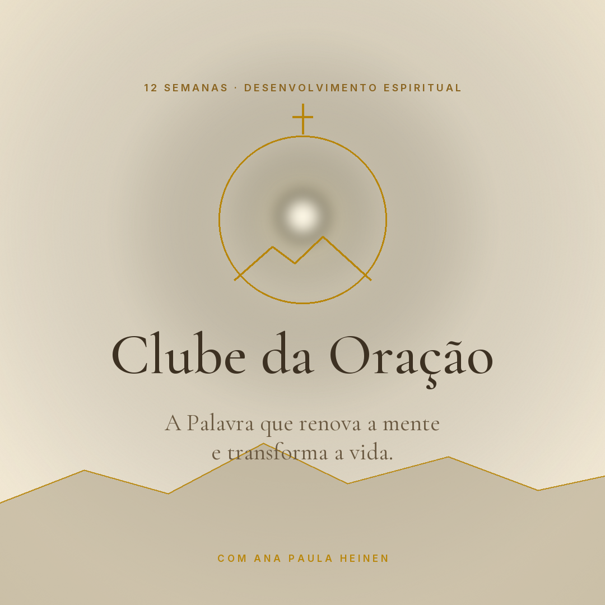
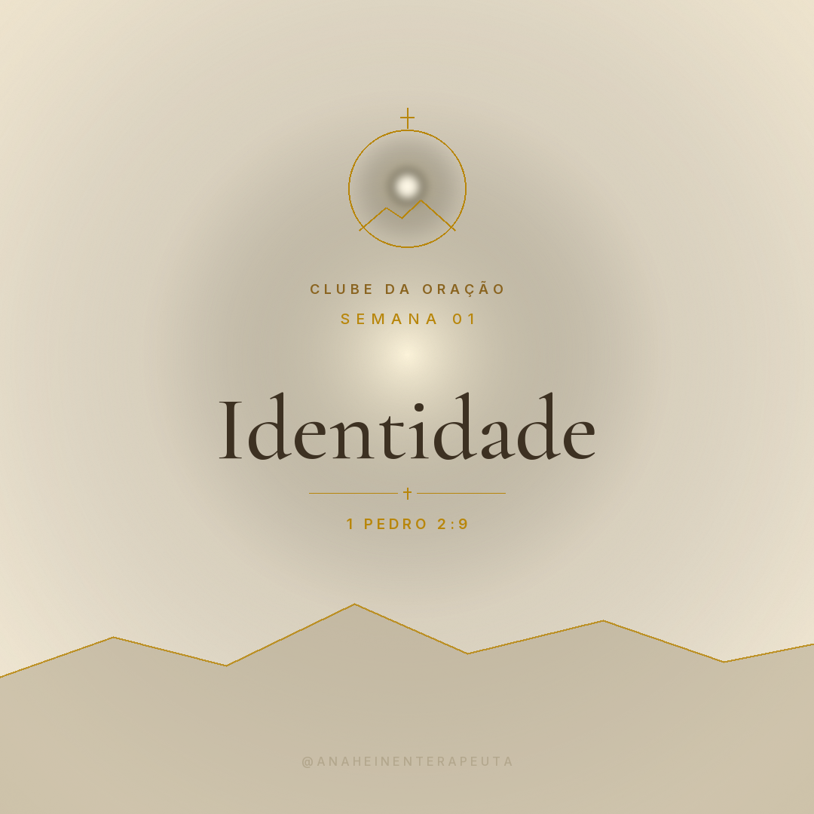
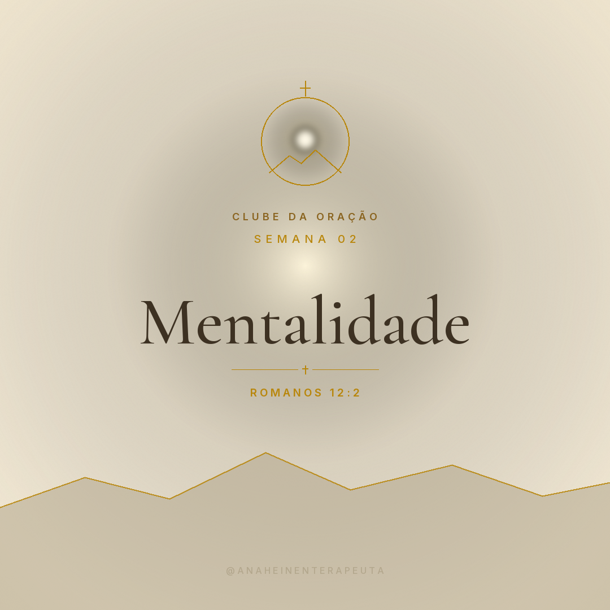
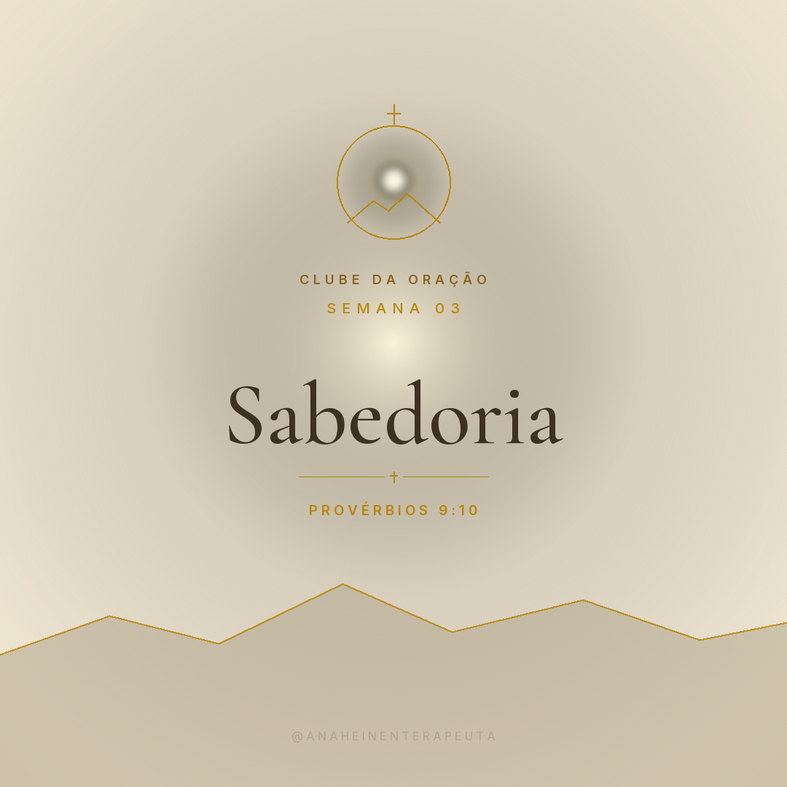
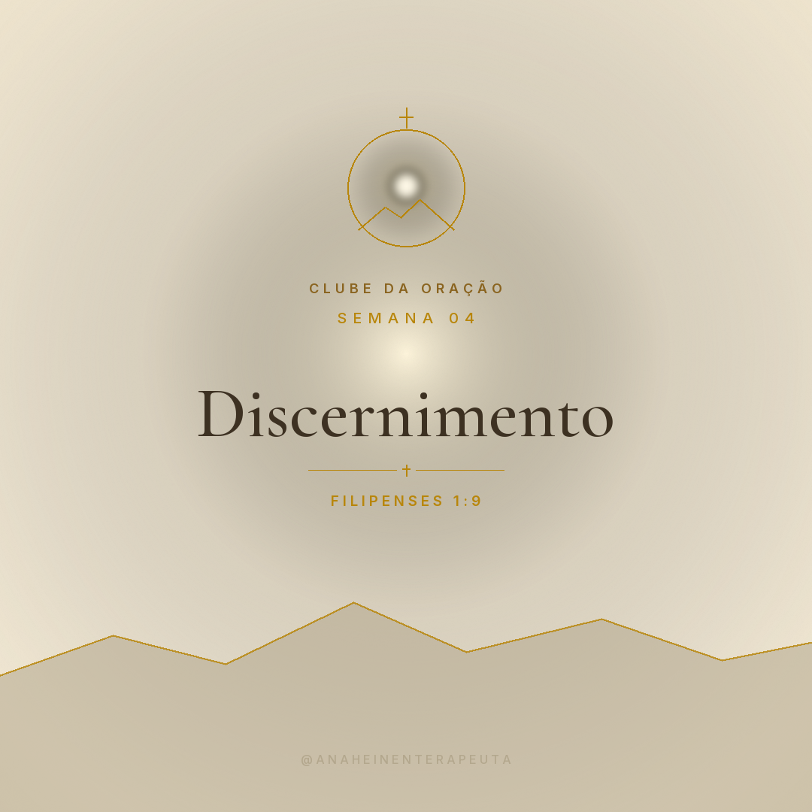
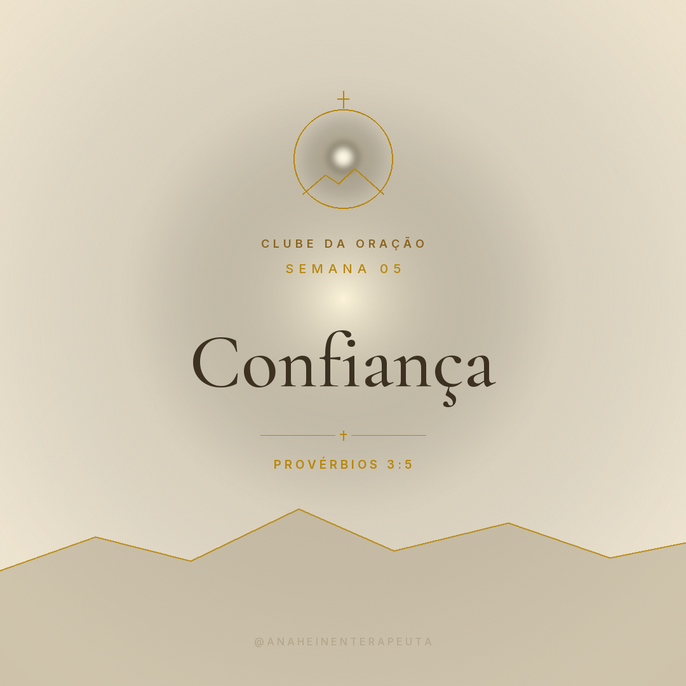
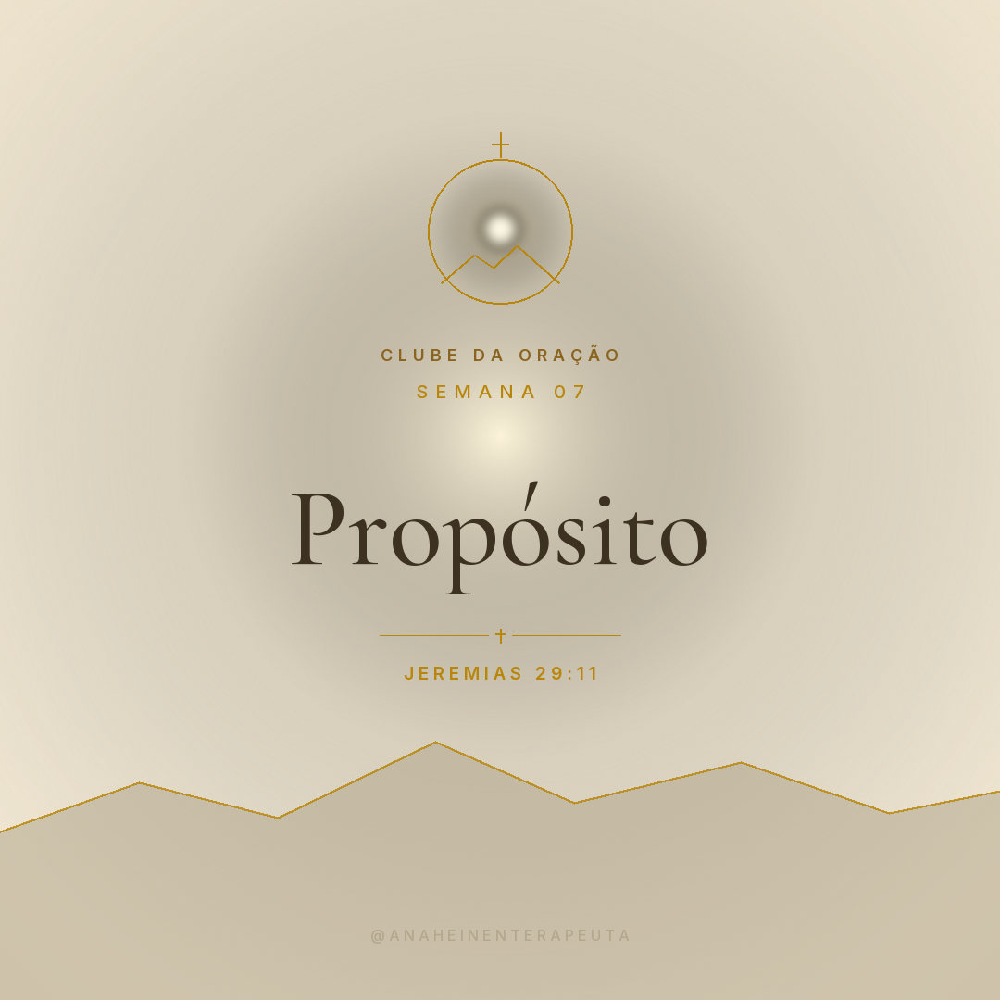
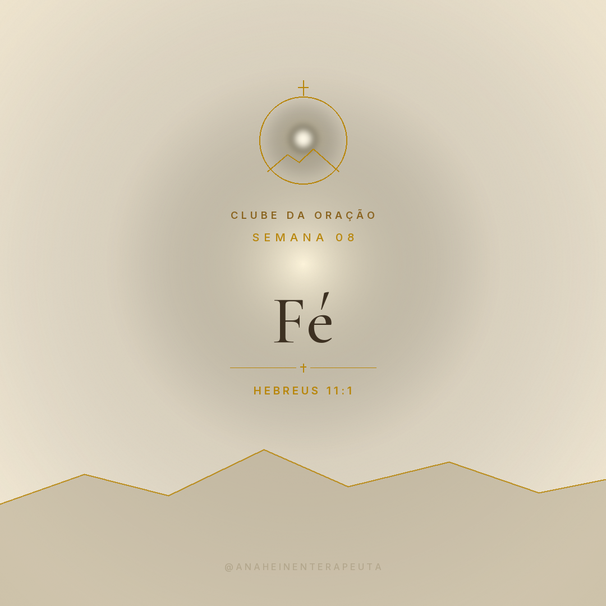
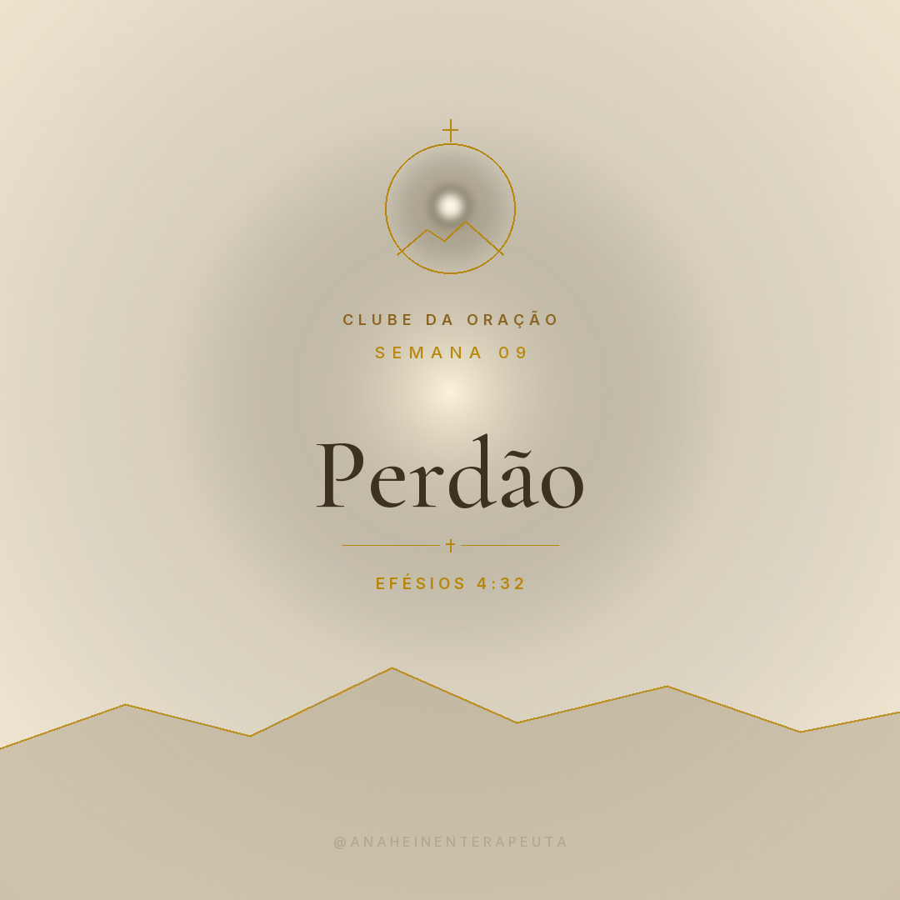
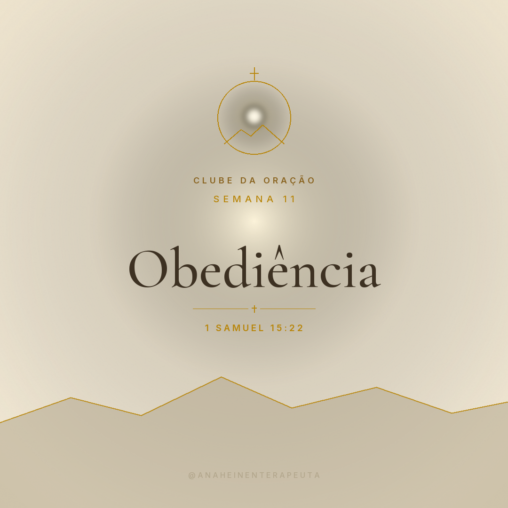

Identidade Visual · Preview para validação
A Palavra que renova a mente e transforma a vida.


01 · Identidade

02 · Mentalidade

03 · Sabedoria

04 · Discernimento

05 · Confiança
06 · Distração e Foco

07 · Propósito

08 · Fé

09 · Perdão
10 · Ansiedade e Paz

11 · Obediência
12 · Intimidade com Deus